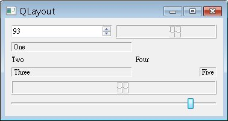

版面配置管理員有個addLayout()方法，可以讓您將另一個版面配置實例加入某個版面配置之中，利用版面配置管理的組合，您可以製作出更複雜的版面配置，以下組合 QHBoxLayout
與 QVBoxLayout 版面配置 及 QGridLayout
版面配置 作為實際示範：
#include <QApplication>
#include <QWidget>
#include <QLabel>
#include <QSpinBox>
#include <QSlider>
#include <QLCDNumber>
#include <QHBoxLayout>
#include <QVBoxLayout>
#include <QGridLayout>
int main(int argc, char *argv[]) {
QApplication app(argc, argv);
QWidget *window = new QWidget;
window->setWindowTitle("QLayout");
// 組合版面配置
QHBoxLayout *hBoxLayout = new QHBoxLayout;
QGridLayout *gridLayout = new QGridLayout;
gridLayout->setColumnMinimumWidth(0, 200);
gridLayout->setColumnMinimumWidth(1, 100);
QVBoxLayout *vBoxLayout = new QVBoxLayout;
vBoxLayout->addLayout(hBoxLayout);
vBoxLayout->addLayout(gridLayout);
window->setLayout(vBoxLayout);
// 使用QHBoxLayout配置
QLCDNumber *lcd1 = new QLCDNumber;
QSpinBox *spinBox = new QSpinBox;
spinBox->setRange(0, 99);
QObject::connect(spinBox, SIGNAL(valueChanged(int)),
lcd1, SLOT(display(int)));
hBoxLayout->addWidget(spinBox);
hBoxLayout->addWidget(lcd1);
// 使用QGridLayout配置
QLabel *label1 = new QLabel("One");
label1->setFrameStyle(QFrame::Panel + QFrame::Sunken);
QLabel *label3 = new QLabel("Three");
label3->setFrameStyle(QFrame::Panel + QFrame::Sunken);
QLabel *label5 = new QLabel("Five");
label5->setFrameStyle(QFrame::Panel + QFrame::Sunken);
gridLayout->addWidget(label1, 0, 0);
gridLayout->addWidget(new QLabel("Two"), 1, 0);
gridLayout->addWidget(label3, 2, 0);
gridLayout->addWidget(new QLabel("Four"), 1, 1);
gridLayout->addWidget(label5, 2, 2);
// 使用QVBoxLayout配置
QLCDNumber *lcd2 = new QLCDNumber;
QSlider *slider = new QSlider(Qt::Horizontal);
slider->setRange(0, 99);
slider->setValue(0);
QObject::connect(slider, SIGNAL(valueChanged(int)),
lcd2, SLOT(display(int)));
vBoxLayout->addWidget(lcd2);
vBoxLayout->addWidget(slider);
// 使用QVBoxLayout配置，當中包括QHBoxLayout與QGridLayout配置好的元件
window->show();
return app.exec();
}
組合完的版面配置結果如下：

在上面的範例中，程式的主流程中充斥著元件建立與版面配置的流程，建議可以利用自訂元件的方式，讓整個程式的流程更清楚一些，例如如下撰寫程式：
#ifndef COMBOLCD_H
#define COMBOLCD_H
#include <QWidget>
class ComboLCD : public QWidget {
public:
ComboLCD(QWidget *parent = 0);
};
#endif
#include <QWidget>
#include <QLCDNumber>
#include <QSpinBox>
#include <QHBoxLayout>
#include "ComboLCD.h"
ComboLCD::ComboLCD(QWidget *parent) : QWidget(parent) {
QLCDNumber *lcd = new QLCDNumber;
QSpinBox *spinBox = new QSpinBox;
spinBox->setRange(0, 99);
QObject::connect(spinBox, SIGNAL(valueChanged(int)),
lcd, SLOT(display(int)));
QHBoxLayout *hBoxLayout = new QHBoxLayout;
hBoxLayout->addWidget(spinBox);
hBoxLayout->addWidget(lcd);
this->setLayout(hBoxLayout);
}
#ifndef GRIDLABEL_H
#define GRIDLABEL_H
#include <QWidget>
class QGridLabel : public QWidget {
public:
QGridLabel(QWidget *parent = 0);
};
#endif
#include <QWidget>
#include <QLabel>
#include <QGridLayout>
#include "GridLabel.h"
GridLabel::GridLabel(QWidget *parent) : QWidget(parent) {
QGridLayout *gridLayout = new QGridLayout;
gridLayout->setColumnMinimumWidth(0, 200);
gridLayout->setColumnMinimumWidth(1, 100);
QLabel *label = new QLabel("One");
label->setFrameStyle(QFrame::Panel + QFrame::Sunken);
gridLayout->addWidget(label, 0, 0);
gridLayout->addWidget(new QLabel("Two"), 1, 0);
label = new QLabel("Three");
label->setFrameStyle(QFrame::Panel + QFrame::Sunken);
gridLayout->addWidget(label, 2, 0);
gridLayout->addWidget(new QLabel("Four"), 1, 1);
label = new QLabel("Five");
label->setFrameStyle(QFrame::Panel + QFrame::Sunken);
gridLayout->addWidget(label, 2, 2);
this->setLayout(gridLayout);
}
#include <QApplication>
#include <QWidget>
#include <QLCDNumber>
#include <QSlider>
#include <QVBoxLayout>
#include "ComboLCD.h"
#include "GridLabel.h"
int main(int argc, char *argv[]) {
QApplication app(argc, argv);
QWidget *window = new QWidget;
window->setWindowTitle("QLayout");
ComboLCD *comboLCD = new ComboLCD;
GridLabel *gridLabel = new GridLabel;
QLCDNumber *lcd = new QLCDNumber;
QSlider *slider = new QSlider(Qt::Horizontal);
slider->setRange(0, 99);
slider->setValue(0);
QObject::connect(slider, SIGNAL(valueChanged(int)),
lcd, SLOT(display(int)));
QVBoxLayout *vBoxLayout = new QVBoxLayout;
vBoxLayout->addWidget(comboLCD);
vBoxLayout->addWidget(gridLabel);
vBoxLayout->addWidget(lcd);
vBoxLayout->addWidget(slider);
window->setLayout(vBoxLayout);
window->show();
return app.exec();
}
把一些元件配置以自訂元件的方式包裝起來，程式的主流程變得較為清晰，這個程式的執行畫面跟上圖是相同的。
|
|